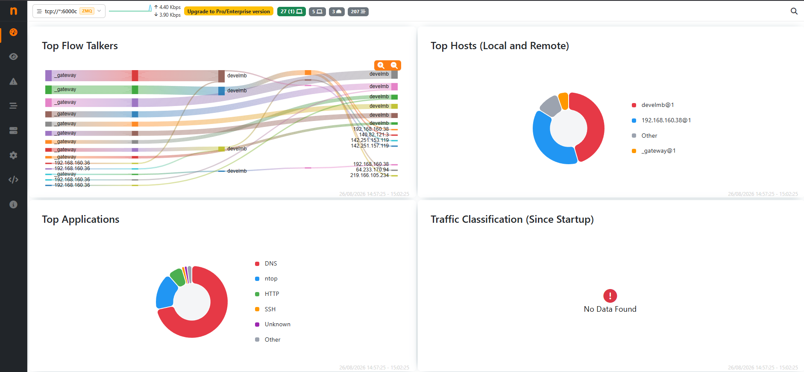
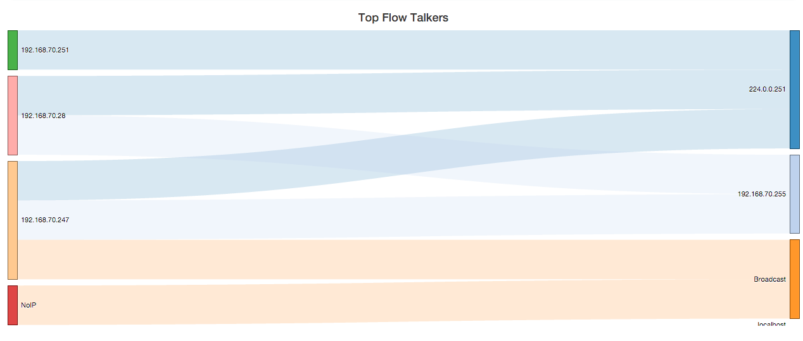
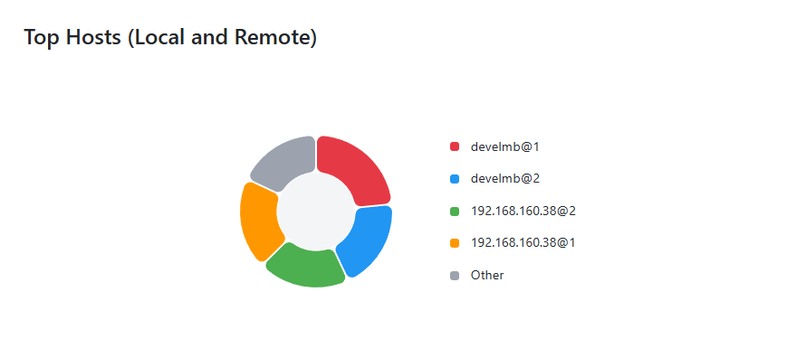
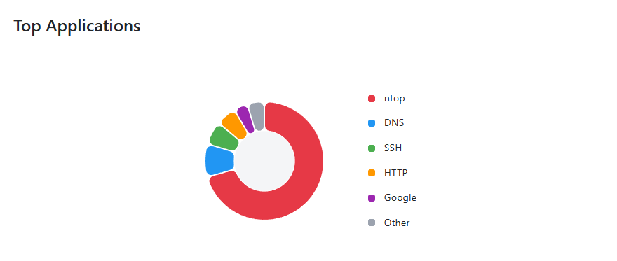
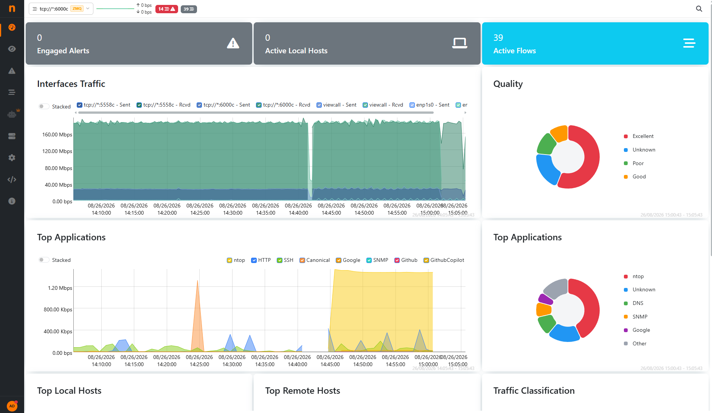

Панель управления трафиком
Панель мониторинга — это целевая страница (по умолчанию), которую вы видите после входа в систему ntopng. Это динамическая страница, предоставляющая обновленный снимок текущего трафика для выбранного интерфейса, отслеживаемого ntopng. Версии Community, Professional и Enterprise имеют разные информационные панели.
Панель управления сообщества
Панель управления сообщества предоставляет информацию о самых популярных участниках, хостах, приложениях и классификации, которые автоматически обновляются каждые несколько секунд.

Панель управления сообщества
Говорящие
Диаграмма Top Flow Talkers Sankey отображает активные в данный момент хосты на отслеживаемом интерфейсе или в представлении интерфейса. Пары хостов соединяются цветными полосами, обозначающими потоки. Хост клиента всегда размещается у левого края панели. Аналогично сервер размещается справа. Ширина полосы пропорциональна объему обмениваемого трафика. Чем шире полоса, тем выше объем трафика, которым обменивается соответствующая пара хостов.

Диаграмма Сэнки лучших говорящих о потоке
Хозяева
В представлении «Основные хосты» представлена круговая диаграмма перехваченного трафика. Агрегация выполняется для каждого хоста. Подобно диаграмме Санки, рассмотренной выше, любое отображаемое имя хоста (или неразрешенный IP-адрес) можно дважды щелкнуть, чтобы перейти на соответствующую страницу «Сведения о хосте».

Круговая диаграмма лучших хостов
Приложения
В представлении «Основные приложения» представлена еще одна круговая диаграмма, представляющая представление использования полосы пропускания, разделенного по протоколам приложений. Идентификация протокола осуществляется с помощью механизма ntopng nDPI. Протоколы, которые невозможно идентифицировать, помечаются как Неизвестные.

Круговая диаграмма наиболее популярных приложений
Как и в предыдущем представлении, названия приложений можно щелкнуть, чтобы перенаправить на страницу с более подробной информацией о приложении.
Профессиональная/корпоративная информационная панель
Панель мониторинга в версиях Professional и Enterprise обеспечивает более высокий уровень детализации, информации и анализа трафика, включая трафик в реальном времени для всех отслеживаемых интерфейсов, для каждого приложения, самых популярных местных говорящих, самых популярных пунктов назначения, сравнение с историческим трафиком (когда включен дамп исторического трафика) и т. д. Панель мониторинга обновляется динамически, таблицы и диаграммы обновляются на ntopng каждые несколько секунд. Панель мониторинга основана на гибком механизме рендеринга на основе шаблонов, что делает ее динамичной и настраиваемой. Существует несколько встроенных шаблонов, и пользователь может добавить больше. Шаблон информационной панели, который используется по умолчанию, автоматически выбирается ntopng на основе конфигурации ntopng (например, графические компоненты, изображающие сравнение трафика по отношению к прошлому, доступны, когда включена поддержка ClickHouse и доступны исторические данные потока).

Корпоративная информационная панель